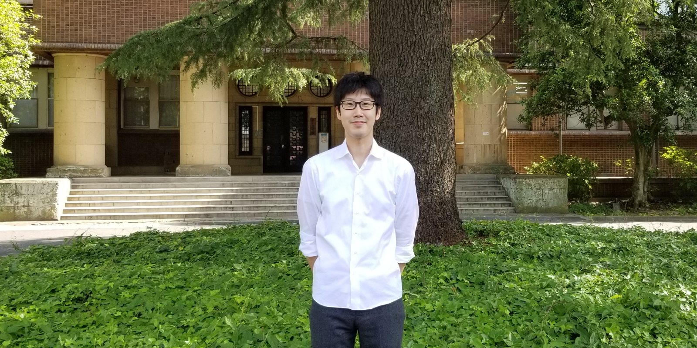

 I am currently a postdoctoral scholar at Scripps Institution of Oceanography, University of California San Diego, working with Prof. Shang-Ping Xie. My former advisors are Prof. Hisashi Nakamura and Prof. Yu Kosaka at Research Center for Advanced Science and Technology, the University of Tokyo.
My research interests focus on atmosphere-ocean interactions associated with low-level clouds. Currently, I'm working on 1) low cloud-SST variability in the subtropical Northeast Pacific and 2) internal variability of Earth's energy imbalance. Please see Research for my previous works.